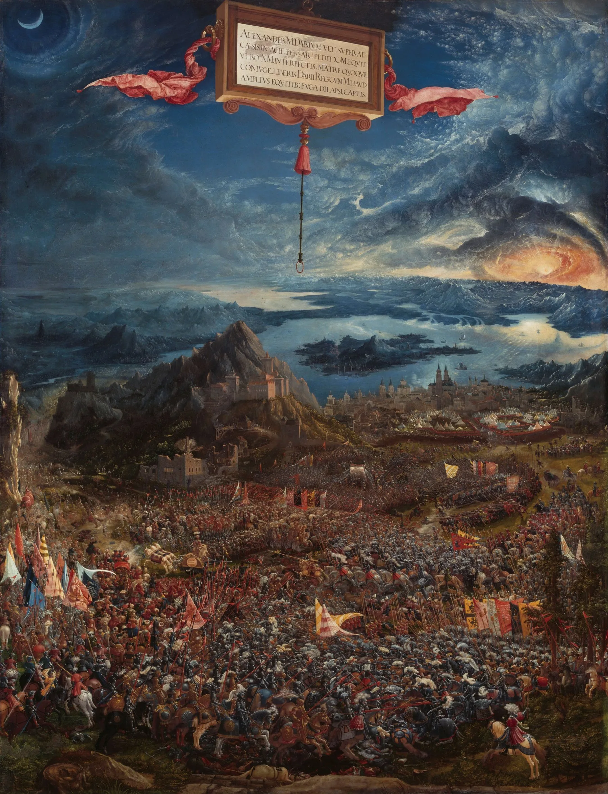
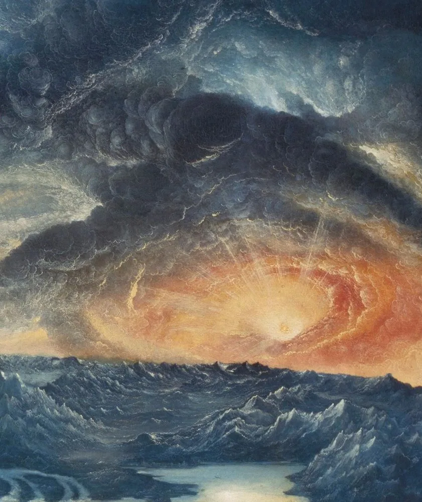
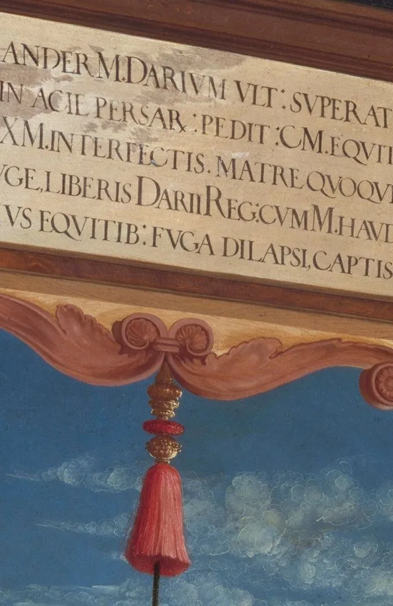
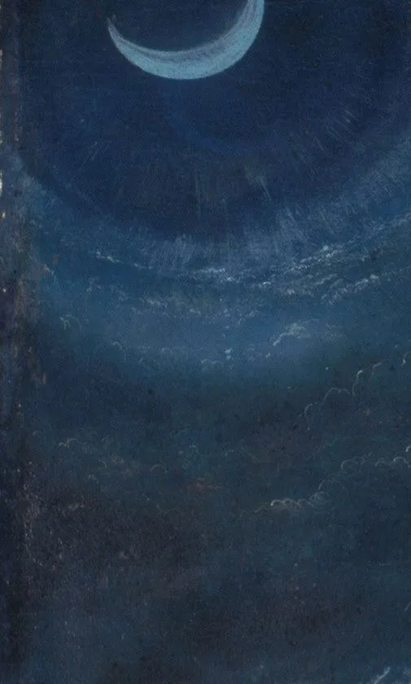
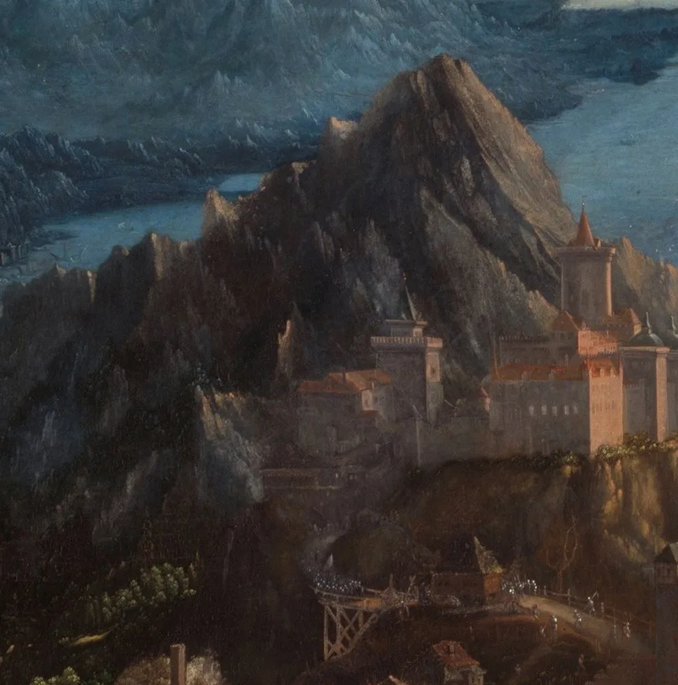
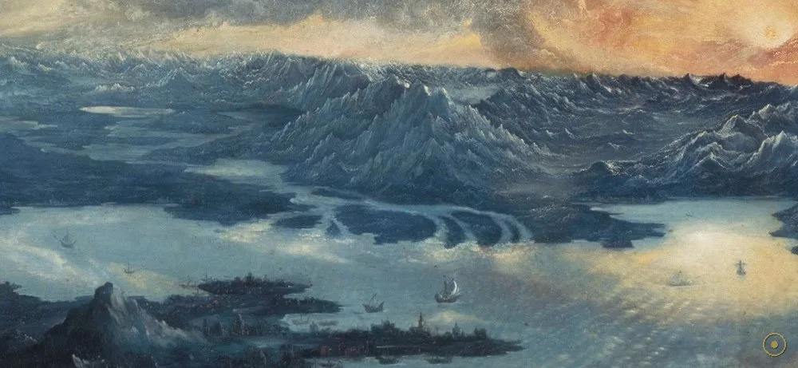
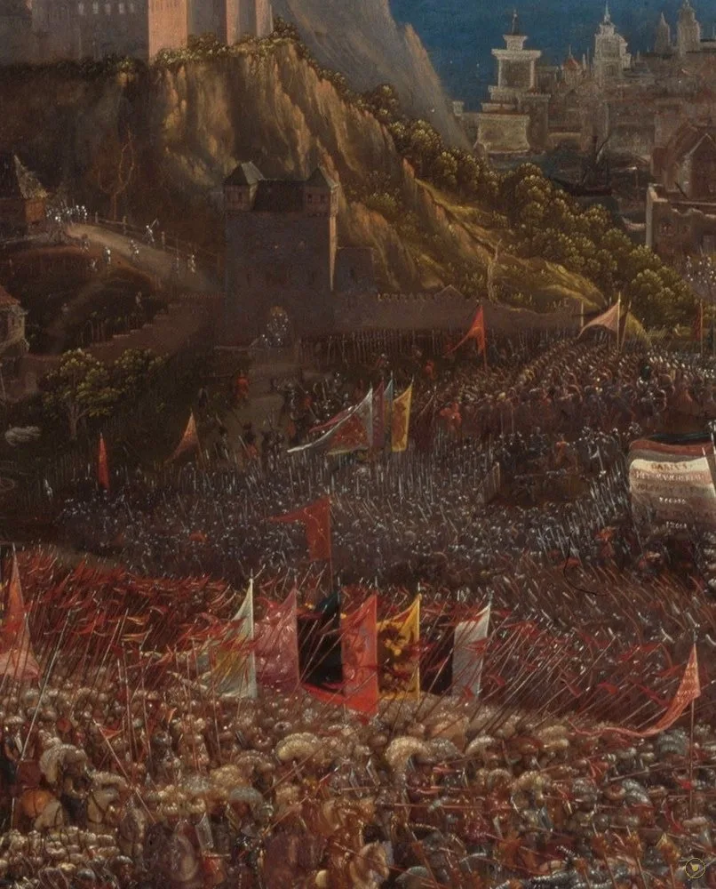
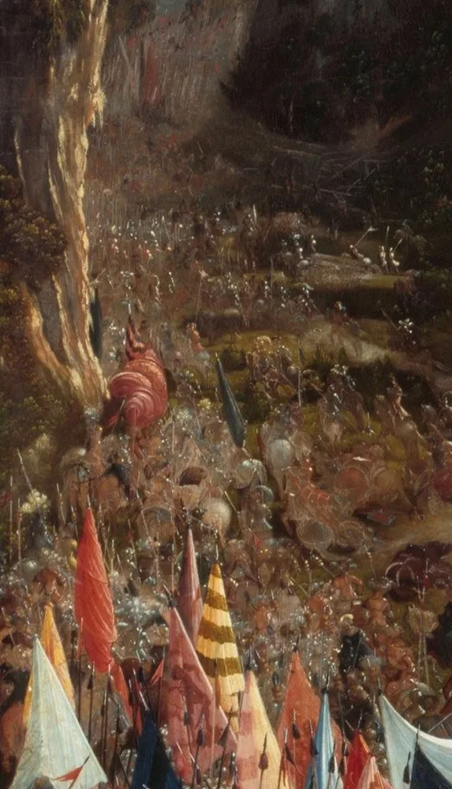
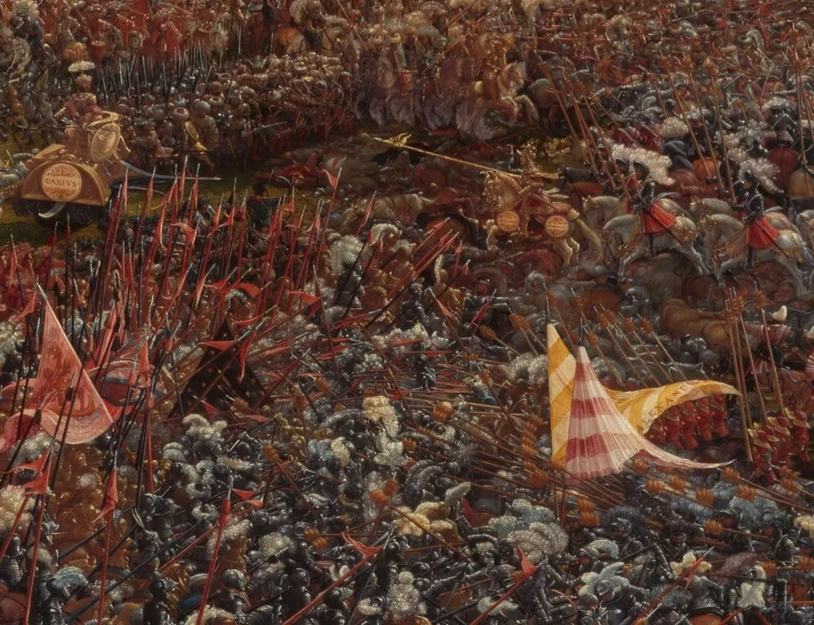

1529 年，德国画家阿尔特多费尔受巴伐利亚公爵威廉四世之托，画下公元前 333 年的伊苏斯之战——马其顿的亚历山大击败波斯的大流士三世。可这幅画真正的主角并不是哪一方：画面上方近三分之二是翻涌的云、沉落的太阳与悬起的新月，下方那片数万人的人海，反倒像被压在天穹脚底下的一幕。它因此被视为西方最早「风景压倒人物」的绘画之一。
战役本身是一场改写历史的胜利：年轻的亚历山大以此役击溃庞大的波斯帝国，从此东进。画家没有去还原真实的小亚细亚地貌，而是凭空造出一片阿尔卑斯式的雪峰、一句「地中海与红海相接」的海湾——把这一幕安置在「已知世界的尽头」。
画幅是竖的（约 158 × 120 厘米），可构图却像一张俯瞰的巨毯：山、城、海、云层层堆叠，成千上万的士兵被压成密密麻麻的色点。你无法数清任何一个士兵，却能被那种「量」的压迫感击中——这是描绘这场人海规模最惊人的手段之一。
一个常被提起的背景是：画作完成的 1529 年，正是奥斯曼大军兵临维也纳之年。于是这幅「亚历山大击败东方帝国」的古老故事，被反复读作对当下「欧洲抵抗东方」的隐喻（主流假说认为）。一场两千年前的胜仗，就这样替十六世纪的欧洲人喊了一声加油。
—— 据慕尼黑老绘画陈列馆（Alte Pinakothek）官方释读及主流艺术史研究（转译）
阿尔特多费尔画的不是战事，而是战事上方那片沉默的、把一切都收进怀里的天空。
画里几乎每一层都在说话：悬着的题铭牌、天边的落日、升起的月亮、雪线岩峰、蔚蓝海湾，以及下方那片绞成一团的骑兵洪流。点击光点，从世界的尽头一路看到人海深处。

点击画面中的 ✦ 光点 查看画中细节 · 图片来源：Wikimedia Commons（公有领域）
从巴伐利亚公爵的订件，到拿破仑的战利品，再到「西方风景画的开端」——同一幅画，在不同的年代被读成了完全不同的东西。
1529 · 慕尼黑订件
巴伐利亚公爵威廉四世为慕尼黑王宫订制一组「著名战役」历史画，阿尔特多费尔受托画下伊苏斯之战；它与同组的其他古战场景并列，用来彰显君主的武功与德意志的荣光。
➤1800 · 被掳往巴黎
拿破仑的军队攻入慕尼黑后，把这幅画连同大批艺术品掠往巴黎。它一度挂在拿破仑的收藏里，直到 1815 年战败才被归还慕尼黑——这幅画自己也经历了一次「被战胜」。
➤19 世纪至今 · 加冕
十九世纪起，人们越来越意识到：这幅画第一次让「风景」压倒了「人物」。它被追认为西方风景画史上的里程碑，也成了老绘画陈列馆最负盛名的明星之一。

其一 · 真实的战役。伊苏斯之战发生在公元前 333 年，马其顿的亚历山大以少胜多，击溃波斯帝国大流士三世的大军，成为他东征的关键一役。画中的题铭牌就为此而设。
其二 · 1529 年的当下。画作完成的同一年，奥斯曼大军正围攻维也纳。于是「亚历山大击败东方帝国」的古老母题，被反复读作「欧洲抵抗东方」的时代隐喻（主流假说）。一幅古战图，成了时局的呐喊。
其三 · 风景第一次当主角。在此之前，风景多为圣像或人物的陪衬；而在这里，山、海、云与天空包围并压倒了人物，被视为西方风景画（landscape painting）觉醒的重要一步。
※ 「1529 奥斯曼围攻维也纳」「威廉四世历史画订件」「拿破仑掠画与 1815 归还」均见于馆藏与艺术史记载；「对抗东方的政治隐喻」为主流解读之一，非画家自述。画中天象（日月同现）的象征义以学界通说为准。
把这片天空与大地拆开，每一层都有自己的重量；而真正的主角，是那个把一切都收进去的、沉默的远景。

红绶带系着的悬牌，用拉丁文点明战役与题献，锚定全画正中。

墨蓝深空里的一弯新月，与落日同框，是胜负的天象注脚。
橙红的太阳坠入漩涡状云涛，光芒炸开——全画最惊心的所在。

凭空搬来的阿尔卑斯式雪峰与城堡，把战场推到世界的边缘。

地中海与红海的轮廓被压进一条地平线，是已知世界的最远方。

城墙、山岩与人潮层层叠叠，是这幅画最深、最密的一处。

左下方密集的彩色战旗，标记出进攻方的方向与气势。

骑兵与步兵绞成一片，画家要的不是个体，而是「量」的压迫。
阿尔特多费尔是「多瑙河画派」的代表，这一派钟情于森林、山岩与天空，偏爱把自然本身画成抒情的主角，而非仅仅做背景。
十六世纪的德意志诸侯热衷于用「著名战役」装点宫廷；威廉四世的这组历史画，既有艺术野心，也有替王朝立传的政治用意。
画作完成之年，奥斯曼军队正围攻维也纳。这一时代背景，使「亚历山大战胜波斯」的题材获得了强烈的现实回响。
在多数文艺复兴绘画里，人是中心；而此画让天与地占据压倒性比例。它常被视作「风景」从配角走向主角的早期范例。
受巴伐利亚公爵威廉四世委托，画成《伊苏斯之战》，作为其历史画系列之一。
拿破仑军队攻入慕尼黑，此画被掠往巴黎，成为战利品。
拿破仑战败，画作被归还慕尼黑，重归巴伐利亚王室收藏。
被追认为「风景压倒人物」的早期典范，进入风景画史的核心叙事。
成为慕尼黑老绘画陈列馆最负盛名的作品之一，也是德国文艺复兴的象征。